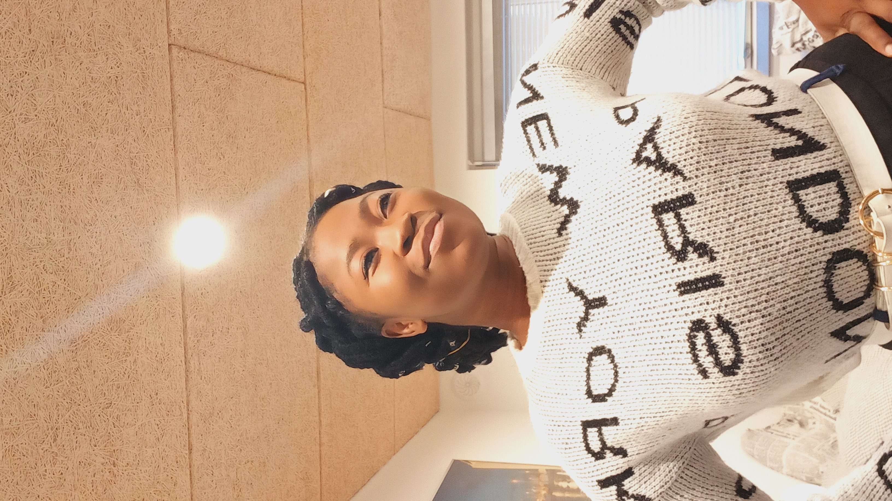

About FreshDine
FreshDine is your smart companion for meal planning and ingredient delivery. We help you eat better, save time, and enjoy food—whether you’re a student, professional, or just someone who wants to make healthy eating simple.
“We started FreshDine because we believe great food should be joyful, healthy, and never a hassle.”
Founded in 2025
in Baden-Württemberg, Germany
in Baden-Württemberg, Germany
100+ recipes
to discover and customize
to discover and customize
Personalized meal plans
for every lifestyle
for every lifestyle
Our Mission:
To take the stress out of healthy eating and make good food easy and enjoyable for everyone.

Chinelo Nweke
Co-founder, Data & BI Analyst
Chinelo is an International Business Information Systems student at Furtwangen University, specializing in business analytics and data-driven decision making. She’s passionate about helping others achieve healthier lifestyles by making sense of food and nutrition data.
“Working with Denzel, I love how every challenge becomes an opportunity to learn and create something meaningful for our users.”
Denzel Pragassa
Co-founder, Software Engineer
Denzel, studies International Business Information Systems student at Furtwangen University, brings a passion for seamless tech and user-friendly web experiences. He aims to empower people with intuitive tools for meal planning, shopping, and recipe discovery.
“Chinelo inspires me to always put our users first—FreshDine is about real people, real needs, and real food joy!”